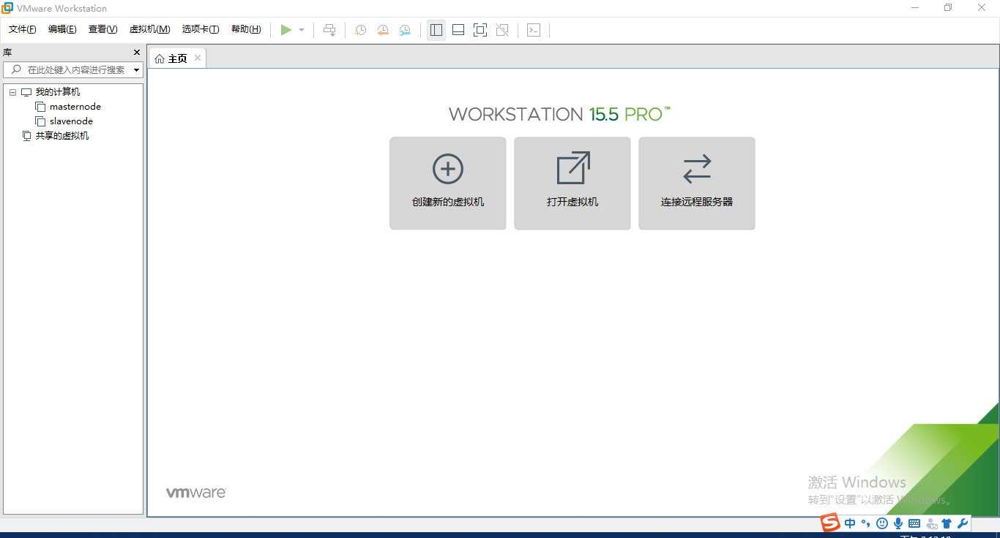
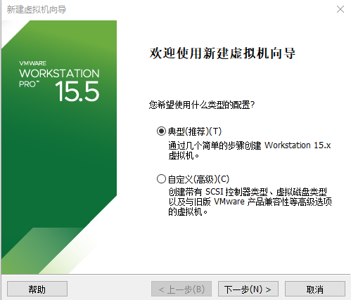
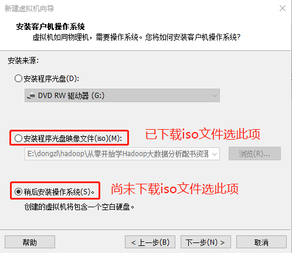
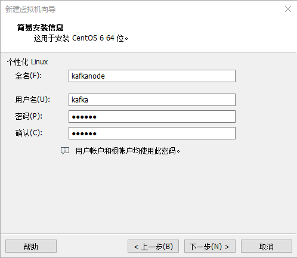
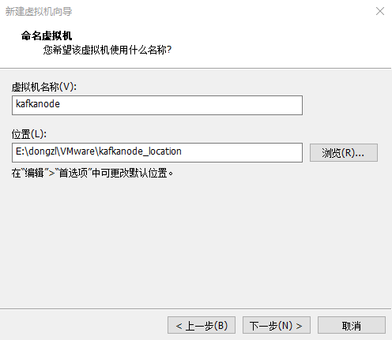
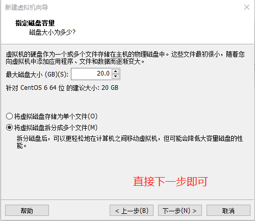
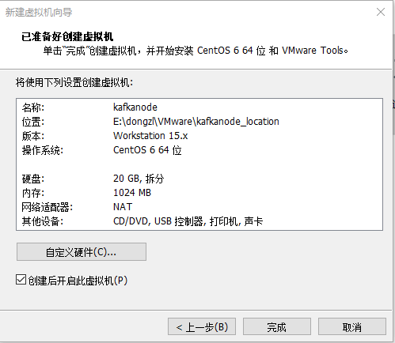

Installing Linux on VMWare
The so-called virtual machine is a computer virtualized via software technology. It is not different from a real computer in terms of use.
Common virtual machine softwares include VMware Workstation (VMware for short), VirtualBox, Microsoft Virtual PC and so on, of which VMware has the highest market share.


Download and install VMWare
VMware has two versions, VMware Workstation pro and VMware Workstation player.
- Player is a free version, which can only be used for non-commercial purposes and is suitable for personal learning.
- Pro is a commercial version with the most powerful function. It can only be used after paying.
I found a pro version with a key on the Internet as following.
Here is the download address of VMware Workstation Pro: https://pan.baidu.com/s/1XXhFFh0Fx0vzvcd1A543Yg , extraction code: 2o19
VMware has high requirements for computer hardware configuration. If the configuration is low, the virtual opportunity will be very slow or even can not run. Theoretically, the higher the configuration, the better. Now the mainstream computer configuration can meet the requirements of running VMware.
Install Linux
1. Start VMware and enter its main interface.
2. Click "create new virtual machine" to enter the virtual machine setting wizard interface. It is recommended that beginners choose "typical (recommended)".
3. Click "next" to enter the install operating system interface. If beginners have prepared the image file (.ISO file) of Linux system in advance, here you can select "image file of installer CD" and find the ISO file to install Linux system through the "Browse" button. Otherwise, select "install operating system later".
It is recommended that beginners download the CentOS image system in advance, and here is the download address of CentOS 6.5 image file Xunlei (click the link or copy the link to Xunlei to start downloading):
- 32-bit CentOS 6.5 image: http://archive.kernel.org/centos-vault/6.5/isos/i386/CentOS-6.5-i386-bin-DVD1.iso
- 64-bit CentOS 6.5 image: http://archive.kernel.org/centos-vault/6.5/isos/x86_64/CentOS-6.5-x86_64-bin-DVD1.iso
4. Click "next" to enter the easy installation information interface, and fill in the full name, user name and password of the virtual machine.
5. Continue to "next", enter the naming virtual machine interface, give the virtual machine a name (any name), and then click the "Browse" button to select the storage location of the virtual machine system installation file.
6. Click "next" to enter the specify disk capacity interface. The default virtual hard disk size is 20GB (the virtual hard disk will be stored in the virtual machine system installation directory in the form of file). The space of the virtual hard disk can be adjusted as needed, but there is no need to worry about the space occupied, because the actual space occupied is based on the installed system size rather than the hard disk size divided here.
For example, if you set the hard disk capacity to 20GB, but only 4GB is used to install Linux, in fact, it will only occupy 4GB of space in your Windows partition, and the occupied space will increase with the increase of the space used by the virtual machine system.
The specify disk capacity interface can only be set by default.
7. Next, enter the ready to create virtual machine interface, confirm the virtual machine settings, and click "Finish" to start creating the virtual machine.
For readers who have downloaded the CentOS image and made corresponding settings in advance in step 3, VMware will directly start the Linux CentOS system at this time.